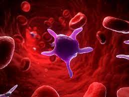

PLATELETS

Platelets, or thrombocytes, are very small, irregularly shaped clear cell fragments, 2–3 µm in diameter, which derive from fragmentation of megakaryocytes. The average lifespan of a platelet is normally just 5 to 9 days. Platelets are a natural source of growth factors. They circulate in the blood of mammals and are involved in hemostasis, leading to the formation of blood clots. Platelets release thread-like fibers to form these clots.
The normal range (99% of population analyzed) for platelets is 150,000 to 450,000 per cubic millimeter. If the number of platelets is too low, excessive bleeding can occur. However, if the number of platelets is too high, blood clots can form thrombosis, which may obstruct blood vessels and result in such events as a stroke, myocardial infarction, pulmonary embolism, or blockage of blood vessels to other parts of the body, such as the extremities of the arms or legs. An abnormality or disease of the platelets is called a thrombocytopathy, which can be either a low number of platelets (thrombocytopenia), a decrease in function of platelets (thrombasthenia), or an increase in the number of platelets (thrombocytosis). There are disorders that reduce the number of platelets, such as heparin-induced thrombocytopenia (HIT) or thrombotic thrombocytopenic purpura (TTP), that typically cause thromboses, or clots, instead of bleeding.
Platelets release a multitude of growth factors including platelet-derived growth factor (PDGF), a potent chemotactic agent, and TGF beta, which stimulates the deposition of extracellular matrix. Both of these growth factors have been shown to play a significant role in the repair and regeneration of connective tissues. Other healing-associated growth factors produced by platelets include basic fibroblast growth factor (bFGF), insulin-like growth factor 1 (IGF-1), platelet-derived epidermal growth factor, and vascular endothelial growth factor (VEGF). Local application of these factors in increased concentrations through platelet-rich plasma (PRP) has been used as an adjunct to wound healing for several decades.